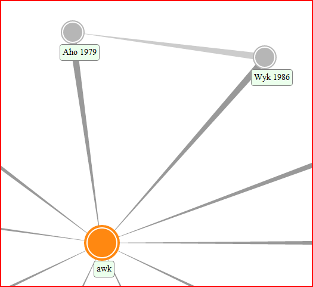
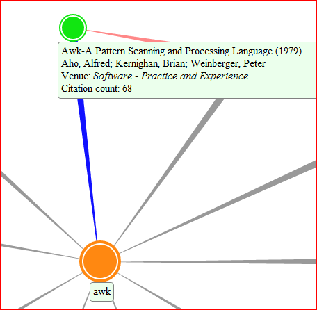
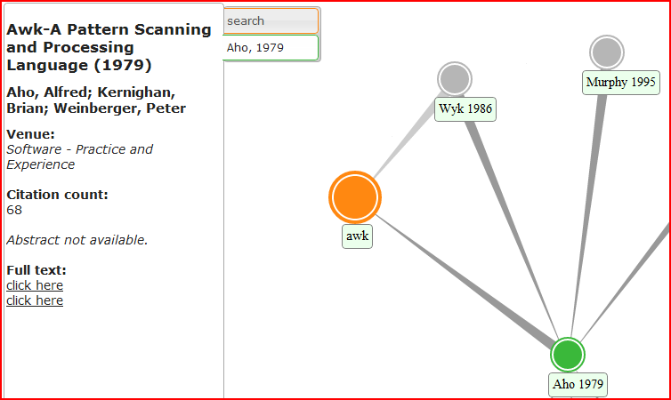

The body of academic literature is enormous. Performing research involves the daunting task of searching through this sea of works and determining which papers are relevant to a particular query. Furthermore, it is difficult to assess the relative importance of any single paper - it is not obvious from reading a paper whether it is a seminal work introducing completely novel ideas, or an involved article with little meaning for those not already experts in the field. The SAGE system helps researchers navigate through the space of academic works, allowing them to quickly find closely related works and locate important similar papers with ease. This is accomplished by visualizing the set of academic papers as a directed graph. Each paper is a node, and there is an edge from one paper to another if the first references the second. This formulation allows for an intuitive estimation and visualization of the importance and context of a paper within a field.
Search queries can be subject areas, keywords, authors, years, venues, or titles of interest. They can also be combinations of several criteria or topics. Enter the desired query in the search bar, then press "Search SAGE" to begin your search. Please allow several seconds for the results to load, as the servers take time to retrieve the information.
In the SAGE graph, papers are represented by nodes, which are tagged with the primary author name and the year of publication, if available.

Hovering over each node will expand this tag to provide more information.

References between papers are indicated by directed edges. Edges point toward the paper that is referenced, and they are color-coded accordingly when hovering over a node, with red indicating papers that reference the selected node and blue indicating the opposite. The graph begins centered on an orange node that represents the search query. This node displays the query text and provides a way to know when the graph is displaying initial search results, as it is the only orange node. It is referenced by the search results, the nodes that are most relevant to the search query, ordered from left to right by year. Navigating deeper into the graph will continue to bring up new, relevant papers that are related to the paper of interest, all represented in the same way.
Navigation of the SAGE graph requires clicking on nodes or tabs. A single click on a node recenters the graph on that node and loads its neighbors. Double-clicking on a node will perform the same actions while also opening a new tab in the sidebar for that node. Double-clicking on that tab will also recenter the graph on the corresponding node, if it is not already in the center.

The sidebar provides more information about your search and any papers of interest. A tab corresponding to a node displays the title, authors, year, citation count, abstract, and links to the full text. To close a tab, simply click the red X that appears to the right of the tab. The tabs are color-coded to the nodes that they represent, and double-clicking will re-center the graph on that node. Double-clicking a tab also changes the node color to blue, indicating you have revisited that node. The "search" tab shows the current search query and gives the option of restarting your search. Double-clicking the "search" tab re-centers on the search node, displaying your search results again.